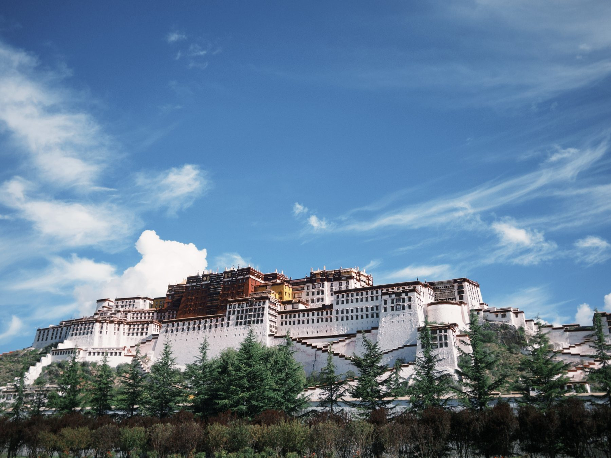
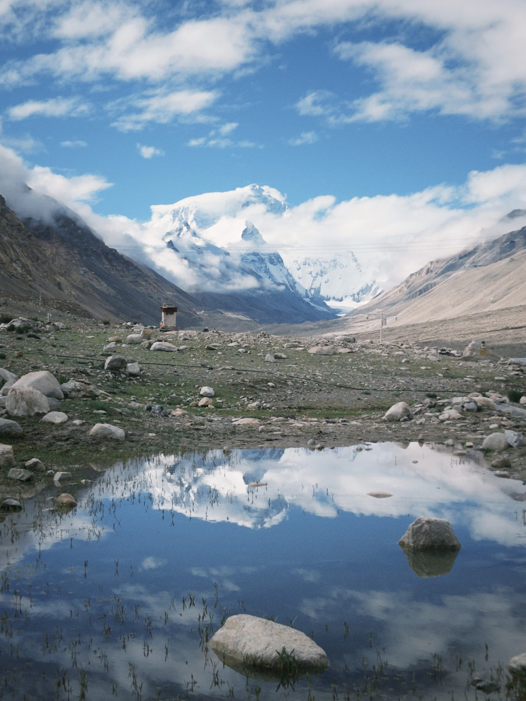
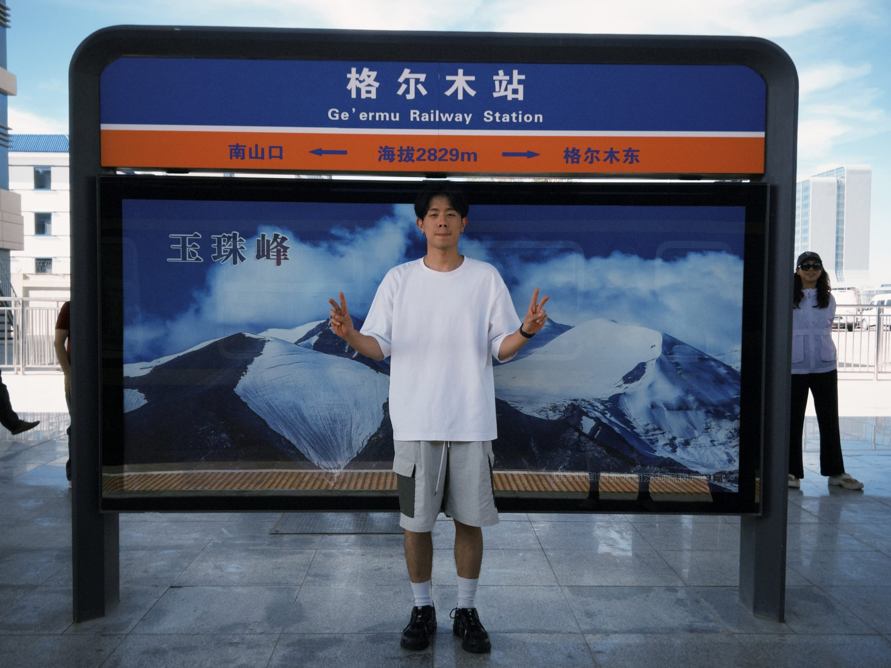
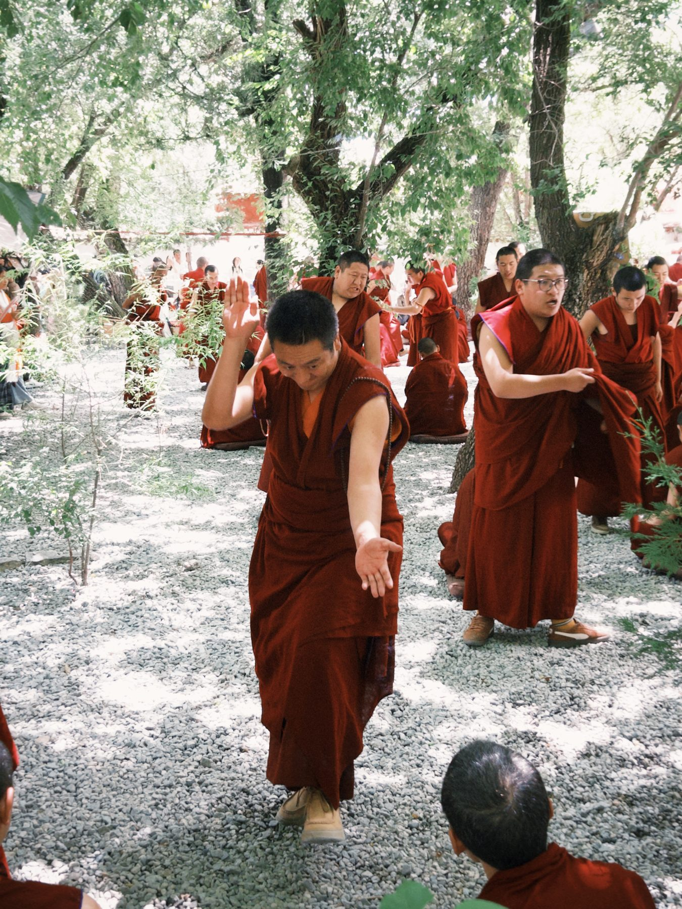

Mountains, trains, and city lights
Potala Palace, Mount Everest, Chongqing bridges, temple walks, and Qinghai-Tibet railway hours.
Life log / Taipei and elsewhere
I am Wei-Han Yu. This site is my personal record of trips, friends, ocean days, lab moments, and the small pieces of life I want to keep. The quant and machine learning side still lives here, but it has its own compact corner.


Life Map
Potala Palace, Mount Everest, Chongqing bridges, temple walks, and Qinghai-Tibet railway hours.
Surfing, beaches, Sydney views, and the feeling of being outside all day.
Hot weather, busy streets, groups of friends, and travel stories that age well.
Research, classes, code, lab people, and the normal days between trips.
Photo Notes
Not a portfolio grid. More like a living scrapbook.








Motion Notes
Small video cards, kept quiet until you press play.
My professional work focuses on market data pipelines, Qlib factor workflows, stock selection, BTC trend forecasting, and computer vision research at NTU.
Project 01 / Qlib / Taiwan Equity
An end-to-end Taiwan equity workflow built around Qlib data preparation, Alpha158/360 feature handlers, tree-based stock selection, backtesting, and trading utilities.
GitHub: hank187548/qlib-publicProject 02 / BTC Forecasting
A separate time-series forecasting project for BTC market direction, using GRU-Attention for 3-class trend prediction.
Project 03 / Image Processing
NTU research project using YOLO, Segment Anything Model, DeepLabCut, and SVM for detection, segmentation, gait tracking, and classification.
Contact
Based in Taipei, Taiwan. Fluent in English and native in Mandarin.